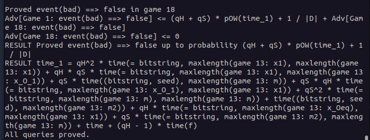

❓ Motivation
What is CryptoVerif?
formalizes sequence of games (game hopping)
computes bound on advantage
Why you should learn about it
confirm your manual proofs
CryptoVerif cannot find attacks BUT failed proof may help you to find such an attack (on a protocol you considered and "proofed" to be secure)
üîß Installation
ℹ️ This tutorial only shows how to install CryptoVerif and its requirements on Ubuntu.
It is also possible to run CryptoVerif under other Linux distributions and Windows.
For information take a look at the README file in the downloaded CryptoVerif folder.
Download CryptoVerif
CryptoVerif can be downloaded here. ​
- Click at the "Source" download link
- Scroll to the very bottom of the page and accept the terms
- Accept again in the popup window
- Download cryptoverif2.06.tar.gz to a location of your choosing
Install OCaml (4.03 or higher)
CryptoVerif requires OCaml version 4.03 or higher to be installed. The easiest way to install OCaml is to use its package manager opam.
add-apt-repository ppa:avsm/ppa
apt update
apt install opam
For CryptoVerif to work it is important to install the OCaml compiler as well.
After the execution of the first command you may be asked if you want to modify a file ~/.profile. You can answer with the default "N".
When asked if you want to add a hook, you can answer with the default "y".
opam init
eval $(opam env)
Check if the installation was successful with the following command.
ocaml -version
Install CryptoVerif
First, you need to uncompress the previously downloaded cryptoverif2.06.tar.gz.
tar -xzf cryptoverif.2.06.tar.gz
Build the programs using the following commands.
cd cryptoverif2.06
./build
Further, CryptoVerif requires the OCaml cryptographic library cryptokit to be installed.
opam install cryptokit
Test for successful installation
Let´s try to run CryptoVerif on an example protocol. You need to be in the directory cryptoverif2.06 where the executable cryptoverif is located, before executing the following command.
./cryptoverif examples/basic/OtwayRees.pcv
Your result should end like this:

ℹ️ Having problems with the installation? Take a look at the README file in the downloaded CryptoVerif folder.
üìö First Proof
Goal: Show Enc-then-Mac IND-CPA if ENC IND-CPA and MAC SUF-CMA
Enc-then-Mac
How does Enc-then-Mac work
Input file
Lets build input file together
Cryptographic assumptions
expand IND-CPA, SUF-CMA (proba Pmac.)
explain technical side: e.g. IND-CPA replaces message with Z(m1),Z(m2) (same bitstring)
Definition Enc-then-Mac
letfun full_enc()
Initial game to prove (including oracles)
QencLR (oracle)
talk about replication (foreach i <= qEnc do) if branches cannot be merged
OStart (first game) talk about queries (query secret b.) talk about run
üí° Challenges
Enc-and-Mac
Try to prove Enc-and-Mac is IND-CPA (which it is NOT).
Try to understand why proof fails in CryptoVerif.
❓ Don´t know how to proceed? Click here.
The input file is almost the same as enc-then-MAC-IND-CPA.ocv discussed in the first proof.
For this task you need to rewrite the defintion of full_enc to match Enc-and-Mac instead of Enc-then-Mac.
Solution:
- rewritten definition of Enc-and-Mac (should be super easy that students understand themselves)
- explanation what the problem is (cannot merge branches in Game 7)
Click here to show solution.
Insert solution here
Emphasize that CryptoVerif cannot prove insecurity of protocols.
Enc-then-Mac IND-CCA2
Prove Enc-then-Mac is IND-CCA2
Hints:
1.1 consider the differences between IND-CPA and IND-CCA2
1.2 told CryptoVerif how Enc-then-Mac is decrypted?
1.3 added oracle for decryption?
1.4 remember that if branches cannot be merged
2.1 Remember to exclude trivial win
2.2 tables syntax:
table tbl_name(type_to_store).
insert tbl_name(obj_to_insert);
get tbl_name(=obj_to_search) in do_true else do_false
3 run oracles simultaneous:
(run Oracle1(a,b) | run Oracle2(c,d,e))
Solution:
- Add full_dec()
- Add Dec oracle
- modify Enc and Dec oracle to exclude trivial win (using table of ciphertexts)
- run oracles simultaneous